ЛР2. Простой сайт на Django
Задание: Реализовать сайт, используя фреймворк Django, паттерн MVC, технологию шаблонизации Jinja2 и СУБД PostgreSQL, в соответствии с вариантом и техническим заданием. Вариант определяется по порядковому номеру в журнале группы.
Стек: Python 3.14, Django 5.2, PostgreSQL, Bootstrap 5
Вариант 6 - Табло победителей автогонок
1. Модель данных
| Модель | Описание | Ключевые поля |
|---|---|---|
| User | Участник автогонок (наследник AbstractUser) |
username, password, first_name, last_name, team, experience, driver_class, bio |
| Race | Автогонка | name, location, date, description |
| Registration | Регистрация участника на гонку | user (FK), race (FK), car_description, race_time, result, created_at |
| Comment | Комментарий к гонке | race (FK), author (FK), text, comment_type, rating (1-10), created_at |
Связи:
Registration.user → User(многие-к-одному)Registration.race → Race(многие-к-одному)Comment.author → User,Comment.race → Raceunique_together = ('user', 'race')- один пользователь не может дважды зарегистрироваться на одну гонку
Разделение данных:
- Постоянные данные участника (команда, опыт, класс, биография) - в модели
User - Переменные данные участия в конкретной гонке (описание автомобиля, время заезда, результат) - в модели
Registration
2. Views
Публичные
| View | URL | Что делает |
|---|---|---|
race_list |
/ |
Список гонок с поиском, фильтром по году, пагинацией |
race_detail |
/races/<pk>/ |
Информация о гонке, участники, комментарии |
register |
/register/ |
Форма регистрации нового пользователя |
user_login |
/login/ |
Форма входа |
user_logout |
/logout/ |
Выход из аккаунта |
Только для авторизованных (@login_required)
| View | URL | Что делает |
|---|---|---|
registration_create |
/races/<id>/register/ |
Зарегистрировать себя на гонку |
my_registrations |
/my-registrations/ |
Список своих регистраций |
registration_edit |
/registrations/<pk>/edit/ |
Редактировать свою регистрацию |
registration_delete |
/registrations/<pk>/delete/ |
Удалить свою регистрацию |
comment_create |
/races/<id>/comment/ |
Оставить комментарий |
Только для администраторов (@user_passes_test(lambda u: u.is_staff))
| View | URL | Что делает |
|---|---|---|
race_create |
/races/create/ |
Создать гонку |
race_edit |
/races/<pk>/edit/ |
Редактировать гонку |
race_delete |
/races/<pk>/delete/ |
Удалить гонку |
registration_set_result |
/registrations/<pk>/set-result/ |
Установить время и результат заезда |
Защита админских view: декоратор @user_passes_test(lambda u: u.is_staff). Если зайдет обычный пользователь - Django редиректит на логин
Защита пользовательских view: декоратор @login_required
3. Реализованные интерфейсы
3.1. Регистрация и вход
Форма регистрации (UserCreationForm с кастомными полями) и форма входа.
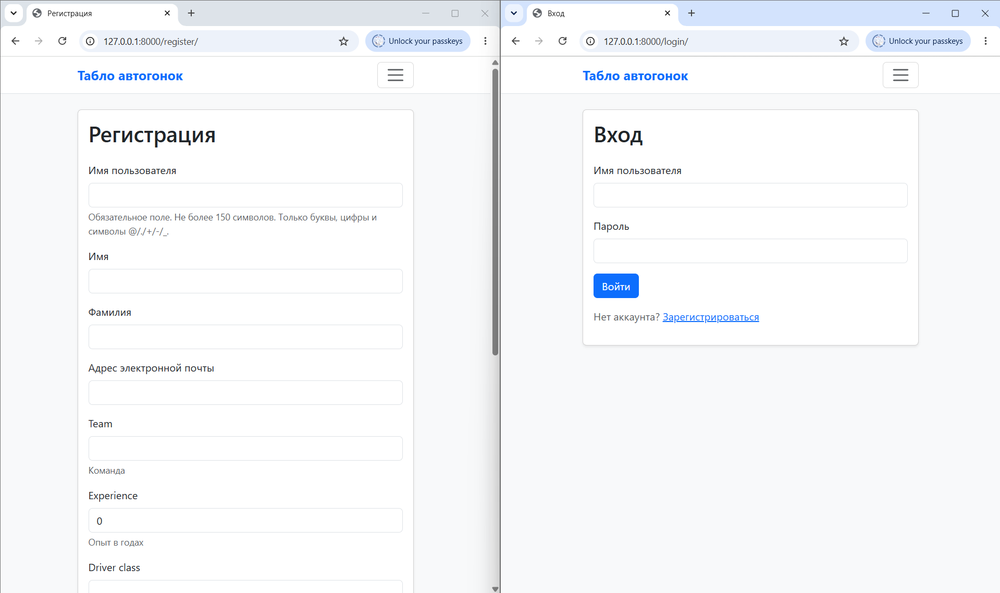
3.2. Список гонок - вид администратора
Список всех гонок с таблицей: название, место, дата. Реализована пагинация (5 гонок на страницу), поиск по названию/месту и фильтр по году.
На скрине: пагинация внизу и кнопка «+ Добавить гонку» - она доступна только администратору.
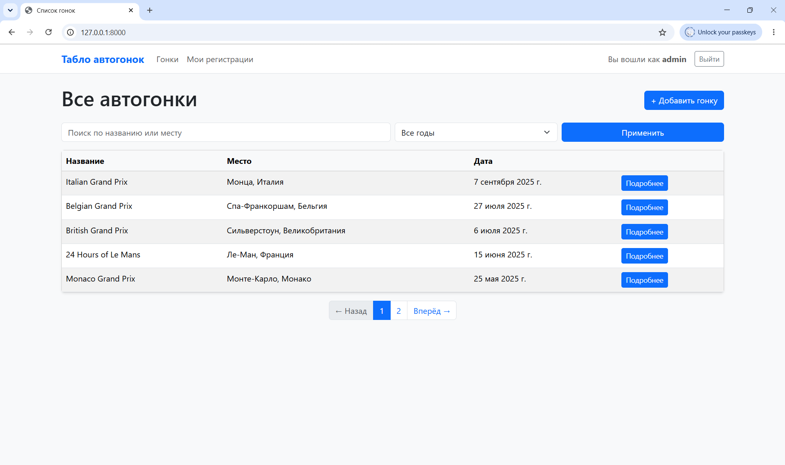
3.3. Список гонок - вид обычного пользователя
Тот же список, но под обычным пользователем. Кнопки «+ Добавить гонку» нет.
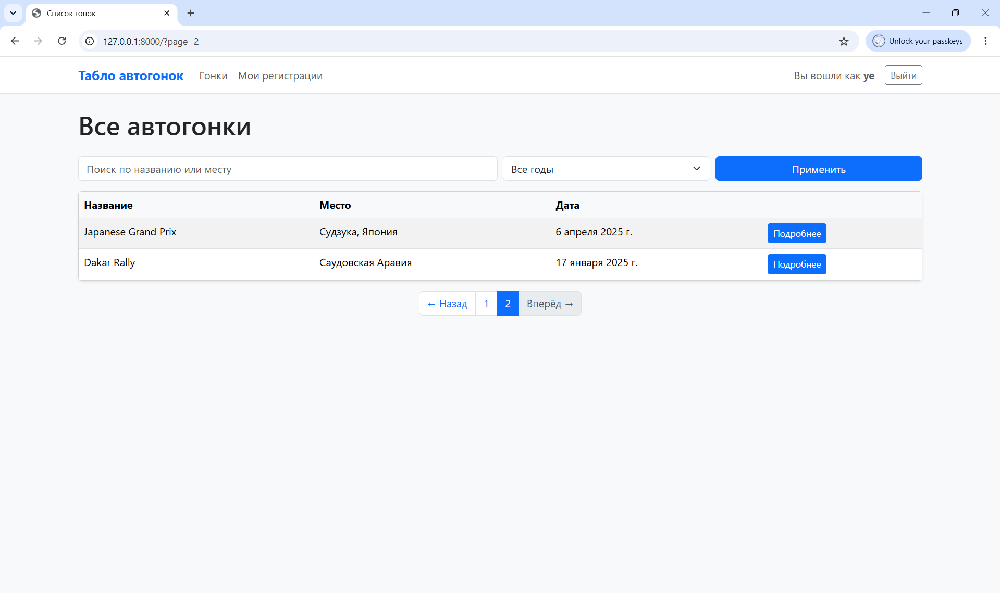
3.4. Поиск и фильтрация
Поиск по названию/месту (Q(name__icontains=...) | Q(location__icontains=...)) и фильтр по году (date__year).
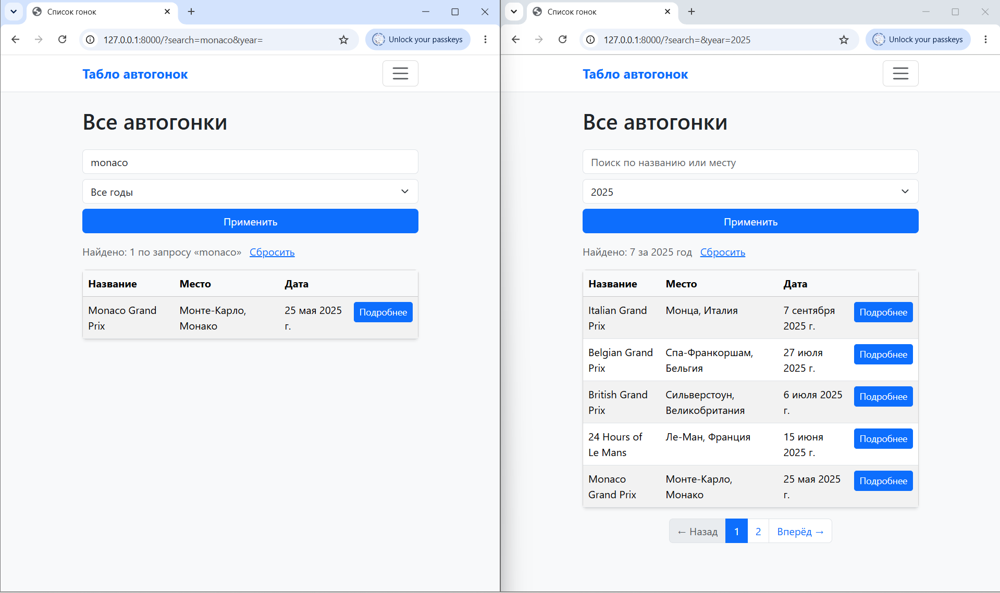
3.5. Страница гонки - вид администратора
Информация о гонке, таблица зарегистрированных участников, комментарии.
На скрине:
- Кнопки «Редактировать гонку» и «Удалить гонку» - доступны только админу
- В таблице участников - кнопка «Результат» с кнопками установки времени и места
- Информация об участнике: ФИО, био, команда, класс, опыт, автомобиль, время, результат
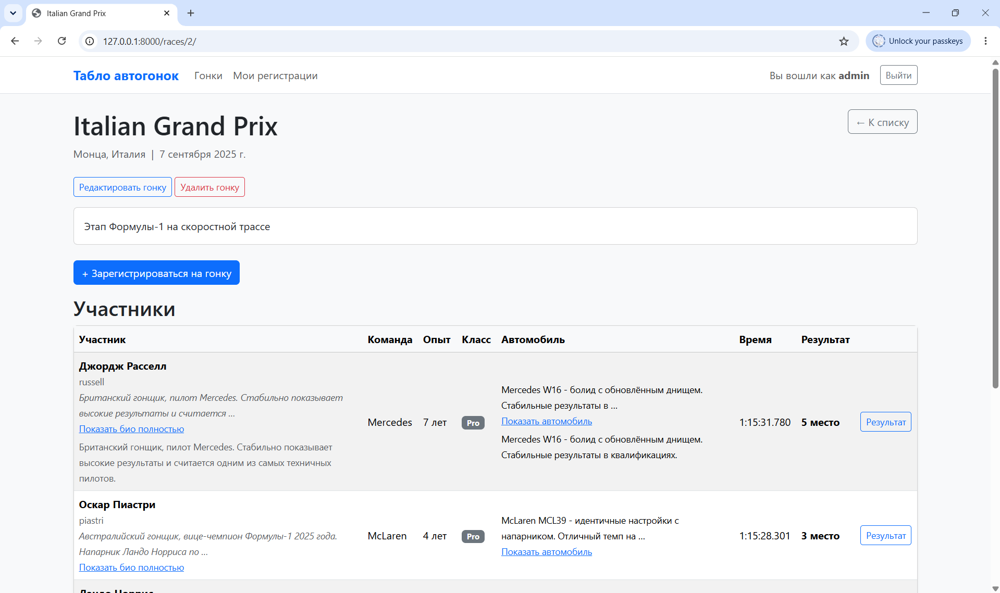
3.6. Страница гонки - вид обычного пользователя
Та же гонка под обычным пользователем - админских кнопок нет, кнопки «Результат» нет.
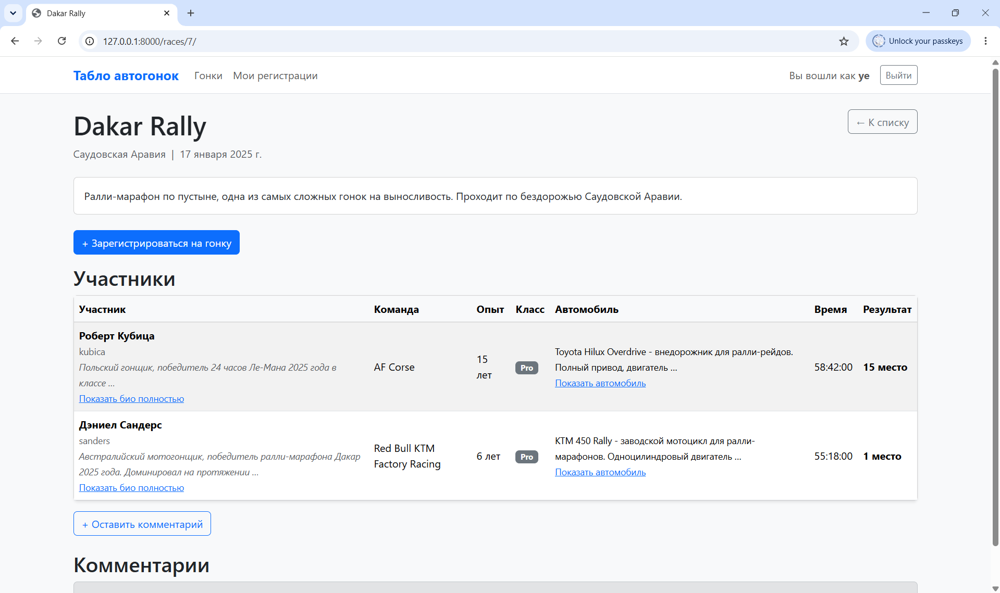
3.7. Мои регистрации
Список регистраций текущего пользователя. Из этой страницы можно редактировать и удалять свои регистрации.
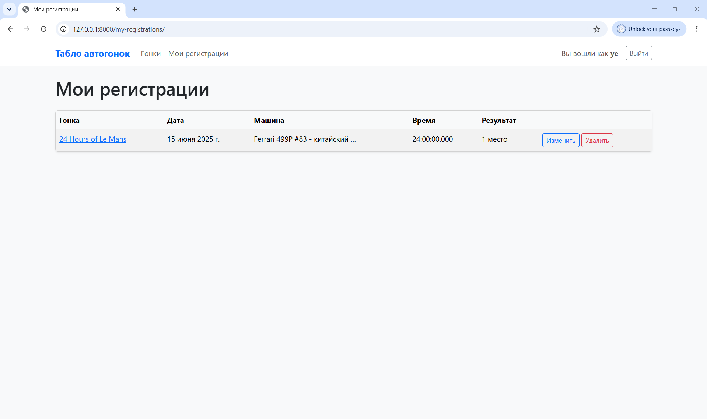
3.8. Редактирование и удаление своей регистрации
Формы редактирования и удаления собственной регистрации.
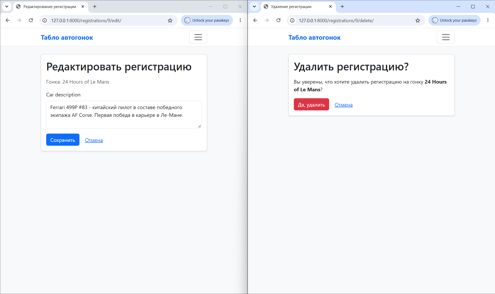
3.9. Комментарии
Форма добавления комментария. Поля:
- текст комментария
- тип комментария - выпадающий список с тремя вариантами
- рейтинг (1–10)
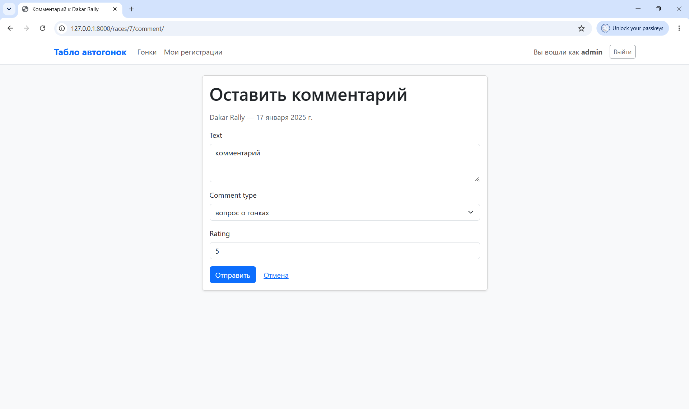
Ниже список добавленных комментариев. Сохраняются: автор, дата создания, текст, тип комментария, рейтинг, а также дата заезда, которая берется из связанной гонки (comment.race.date).
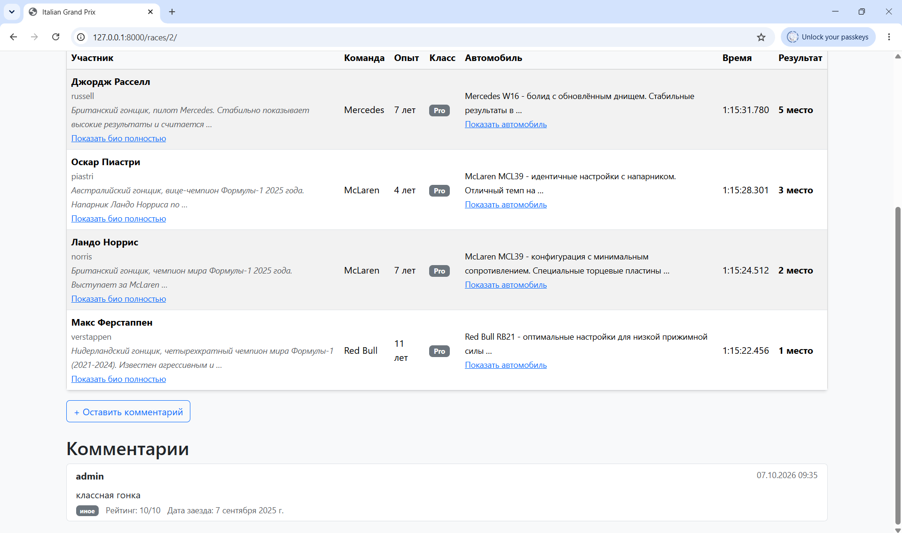
3.10. Создание и редактирование гонки (только админ)
CRUD гонок в клиентском интерфейсе, доступен только администратору.
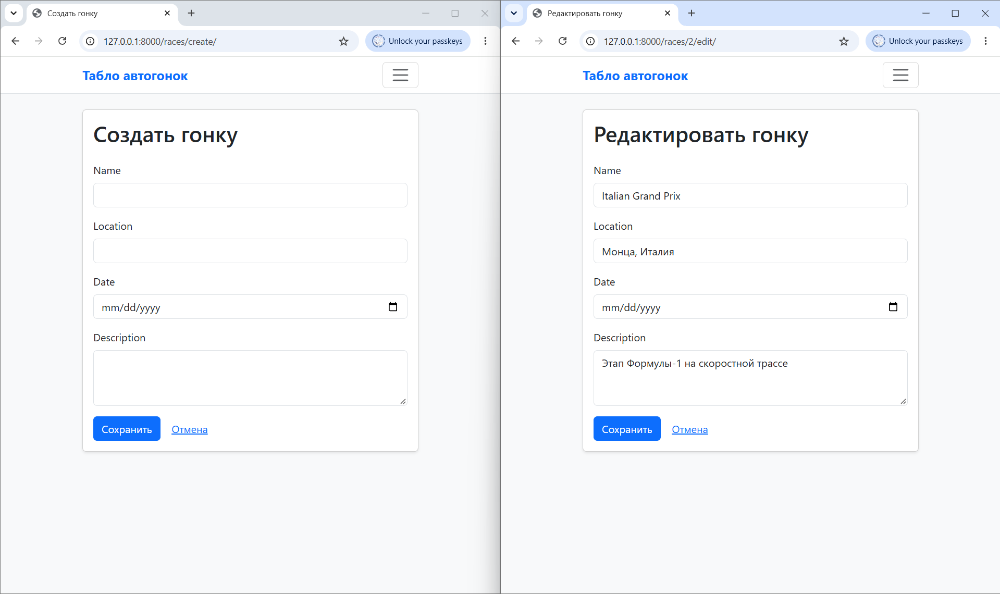
3.11. Установка результата (только админ)
Администратор задает время заезда и результат в клиентском интерфейсе.
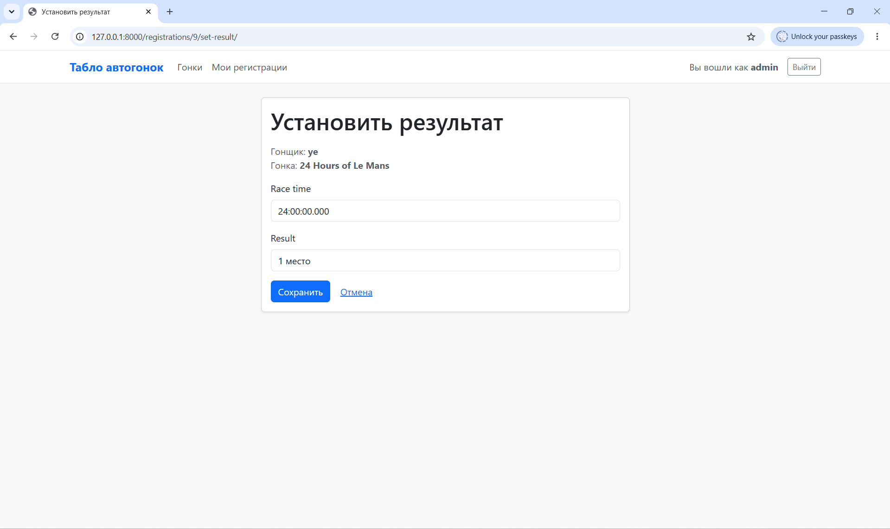
3.12. Django-admin
Админка Django.
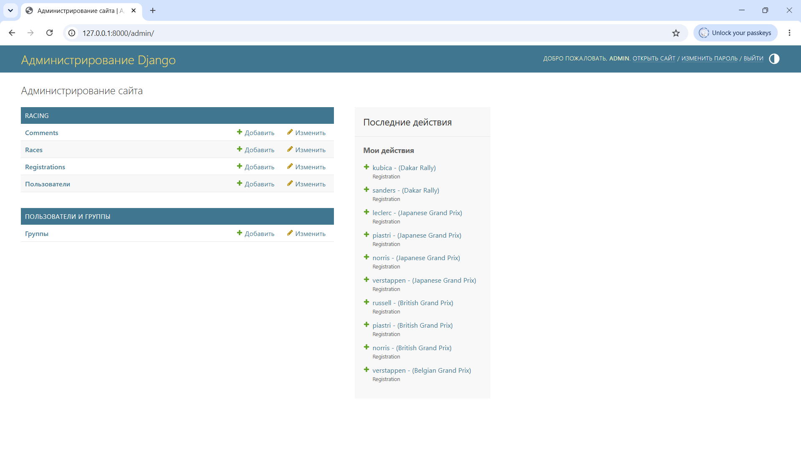